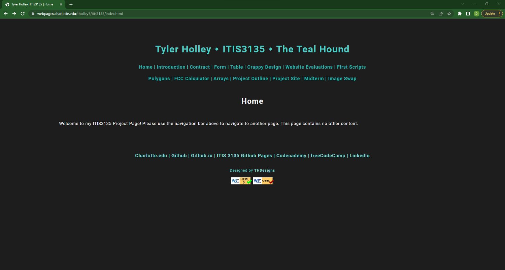
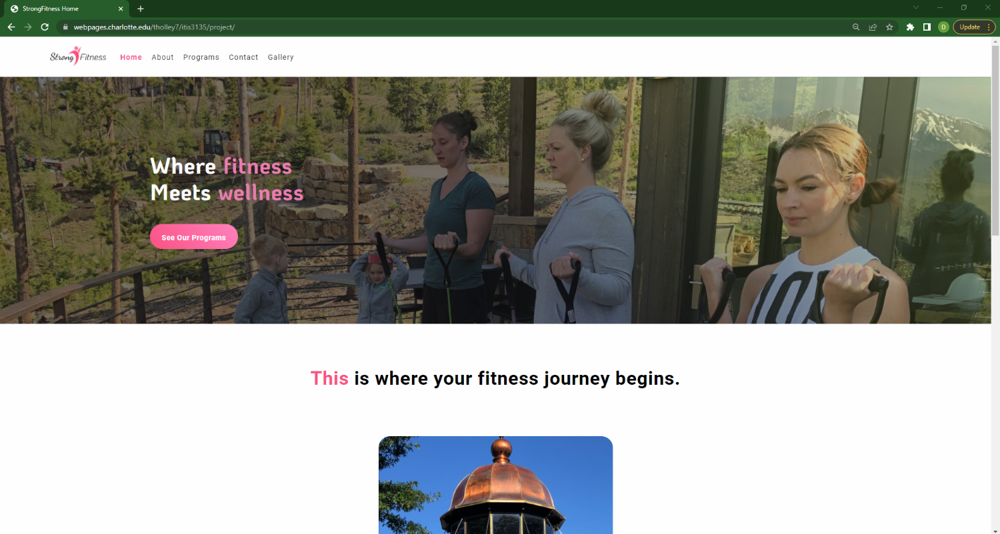

Peer Review 2 Evaluation: Holley, Tyler

Basic site, with simple headers and footers.
File Management
The main site is very simple and basic and meets the main requirements for all the activities.
Files are neatly organized and are very much held in a minimalistic style.
Styles
The colors that were chosed for the main site is very easy on the eyes.
The site is consistent throughout with the color scheme.
Font Choice is easy to read and looks clean.
Page Design
Not all margins are the same on all pages.
The site uses proper fonts and good colors to make the viewing experience enjoyable.
There isn't any annoying details that are painful to look at.
Validation
Validation buttons are formatted properly.
Hovering over the buttons the link ends with referer.
All pages fully validate with no errors.
Page Code
The page code works perfectly on all pages that have JS in them.
The HTML include is not being utilized, which could make the time spent copying and pasting not be wasted.
But other than that, this is a wonderful webpage and it definently does not look like a first website.

Basic site, with simple headers and footers.
This site is incredible. I think this site looks like it was made off of wix, and all the details are very nice and very modern. The formatting of the pages with CSS is impeccable and I am truly impressed by this work. Great Job!
Excellent Job, Review score: 33/30